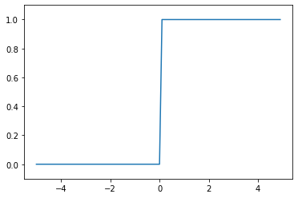
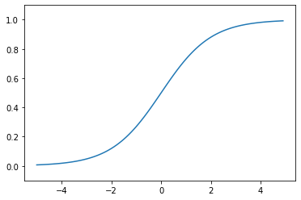
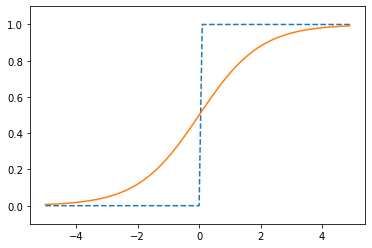
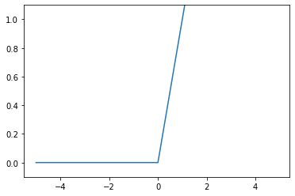

4.2. 活性化関数¶
4.2.1. シグモイド関数¶
\[h(x) = \frac{1} {1 + \exp(-x)}\]
4.2.2. シグモイド関数の説明の前に…ステップ関数を作る¶
パーセプトロンのように、閾値以上だと0, 閾値以下だと1を出力、と閾値を境に出力する値が変わる関数のことを「ステップ関数」または「階段関数」と呼ぶ。
シグモイド関数と比較するために入力が0を超えたら1を出力し、それ以外は0を出力するステップ関数を作る。
\[\begin{split}y = \begin{cases}
0 \quad (x \leqq 0) \\
1 \quad (x > 0) \\
\end{cases}\end{split}\]
[1]:
import numpy as np
import matplotlib.pylab as plt
def step_function(x):
"""
入力xに対し、0 <= x の時は 0, x > 0 の時は1を返却する
ステップ関数
Parameters
----------
x: numpy.ndarray
入力xの配列
"""
y = x > 0
return y.astype(np.int)
x = np.arange(-5.0, 5.0, 0.1) # x
y = step_function(x)
plt.plot(x, y)
plt.ylim(-0.1, 1.1)
plt.show()

4.2.3. シグモイド関数の実装¶
[2]:
import numpy as np
import matplotlib.pylab as plt
def sigmoid(x):
"""
シグモイド関数
Parameters
----------
x: numpy.ndarray
入力xの配列
"""
return 1 / (1 + np.exp(-x))
x = np.arange(-5.0, 5.0, 0.1) # x
y = sigmoid(x)
plt.plot(x, y)
plt.ylim(-0.1, 1.1)
plt.show()

4.2.4. ステップ関数とシグモイド関数の比較¶
[3]:
x = np.arange(-5.0, 5.0, 0.1)
y1 = step_function(x)
y2 = sigmoid(x)
plt.plot(x, y1, label="ステップ関数", ls="--")
plt.plot(x, y2, label="シグモイド関数")
plt.ylim(-0.1, 1.1)
plt.show()

ステップ関数と比較したとき、シグモイド関数のグラフはなめらかなのがわかる。
4.2.5. 非線形関数¶
「線形関数」がグラフ上1本の直線になるのに対し、「非線形関数」は1本の直線にならない。
ニューラルネットワークでは、「線形関数」を使ってしまうと、隠れ層のないネットワークになる (≒入力が1しかない、単純な関数になる) ので使わない。
たとえは、\(h(x) = cx\) という線形関数があったする。
これを活性化関数として、3層のネットワークを構築したとしよう。
\[y(x) = h(h(h(x)))\]
これを展開すると
\[\begin{split}y(x) = c(c(cx)) \\
y(x) = c^3x\end{split}\]
つまり
\[\begin{split}y(x) = ax \\
(a = c^3)\end{split}\]
と、単純な別の活性化関数に置き換わってしまう。
つまり、多層\(y(x) = h(h(h(x)))\)にしたつもりでも、単層$ y(x) = ax \quad (a = c^3) $にした結果と同じになってしまう
4.2.6. ReLU 関数¶
シグモイド関数は古くから使われているが、最近は ReLU (Rectified Linear Unit) が使われるようになった。
\[\begin{split}h(x) = \begin{cases}
x \quad (x > 0) \\
0 \quad (x \leq 0)
\end{cases}\end{split}\]
[4]:
import numpy as np
import matplotlib.pylab as plt
def relu(x):
"""
入力xに対し、x > 0 の時は x, x <= 0 の時は0を返却する
ReLU関数
Parameters
----------
x: numpy.ndarray
入力xの配列
"""
return np.maximum(0, x)
x = np.arange(-5.0, 5.0, 0.1) # x
y = relu(x)
plt.plot(x, y)
plt.ylim(-0.1, 1.1)
plt.show()
